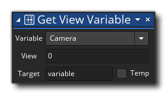

Descripción
Esta acción le permite obtener el valor de ciertas variables integradas relacionadas con un puerto de vista determinado. Seleccione la variable de puerto de vista que se va a recuperar, luego dele el puerto de vista al objetivo (de 0 a 7) y finalmente la variable de destino para mantener el valor devuelto (esto puede marcarse como una variable local temporal). El puerto de visualización es el área de la pantalla que se usará para dibujar una vista de cámara determinada (como se configuró en el editor de sala), y las diferentes variables que puede obtener de esta manera se describen en la tabla a continuación:
Variable Descripción Cámara El valor devuelto será el valor único de identificación de la cámara asignado al puerto (consulte aquí para obtener más información). Visibilidad Esto devolverá un valor de true o false dónde true es que el puerto de vista es visible (es decir, si se dibuja en la pantalla), y false lo que significa que no se está dibujando nada. Ver la Coordenada del puerto X Esta es la posición X del puerto de vista dentro de la ventana del juego. Ver el puerto Y Coordinate Esta es la posición Y del puerto de visualización dentro de la ventana del juego. Ver el ancho del puerto Este es el ancho (en píxeles) del puerto de visualización. Ver la altura del puerto Esta es la altura (en píxeles) del puerto de visualización. Ver ID de la superficie del puerto Esto devolverá el valor único de ID para la superficie asignada al puerto de visualización o -1 si no se ha asignado ninguna superficie.
Sintaxis de acción:
Argumentos:
Argumento Descripción Variable La variable de vista incorporada para obtener View El puerto de visualización al objetivo (de 0 a 7) Target La variable de destino para mantener el valor devuelto (se puede marcar como una variable local temporal)
Ejemplo:

El código de bloque de acción anterior obtiene la ID de cámara actual asignada para ver el puerto [0] y luego verifica si es la misma que la almacenada en una variable global. Si no es así, la cámara se establece en la nueva.